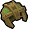
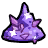
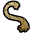
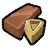

Guardian Crackle Knuckle's Questline¶
Guardian Crackle Knuckle's Questline¶
| Tribe | Type | Quests | Levels | Total XP | Branches off |
|---|---|---|---|---|---|
| Side quest | 9 | 45–50 | 0 | Guardian Willow's Questline |
In the quest journal¶
Quests¶
| Quest | Level | XP | Bananas | Rewards |
|---|---|---|---|---|
 DOWN YA GO DOWN YA GO |
45 | 0 | 0 |  Guardian Knight Training Helmet |
| CRACKLE KNUCKLE? |
45 | 0 | 0 | |
| BOOM BOMB DUST |
45 | 0 | 0 |  Shard Dust |
| A FISTFUL OF SPAWNERS |
45 | 0 | 0 | |
| SMELL THE BOOM! |
45 | 0 | 0 |  Boombug Fuse |
| MONSTERS ALL AROUND |
45 | 0 | 0 | |
| BLAST THE SHADOWS |
50 | 0 | 0 |  Ancient Guardian Fragment |
| THE MISSING LINKS |
50 | 0 | 0 | |
| BLOW 'EM UP! |
50 | 0 | 0 | Boombug Fuse |
Side questlines branching off¶
- Guardian Honcho's Questline (Primary, levels 45–45)